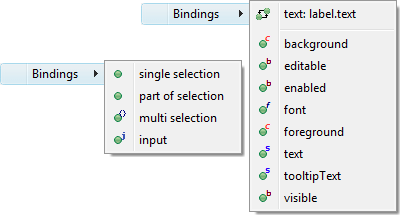
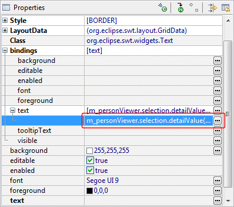
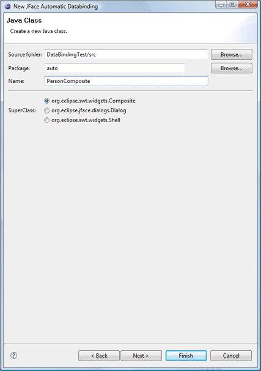
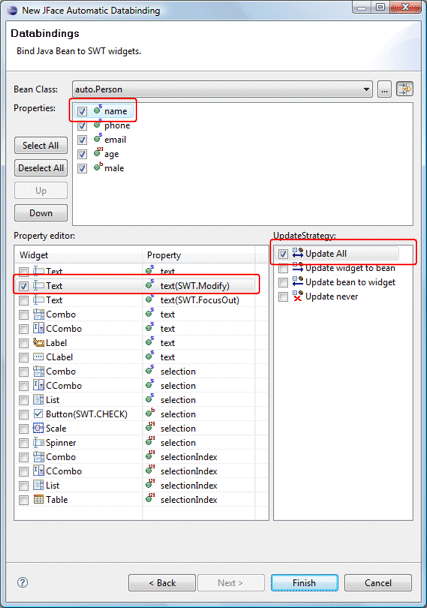
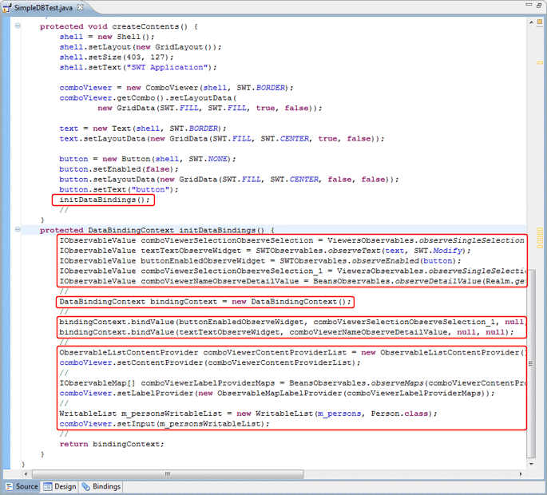

The tool can create new Data Bindings in several different ways:
Click the Bindings tab in the editor to created and edit the bindings.
Right-clicking on a widget and selecting the Data Binding menu.
Expanding the bindings property in the property pane.
Use the JFace Automatic Data Binding wizard to create a complete user interface from a domain (bean) class.
The tool will generate or update any necessary data binding code which may then be seen in the Source view.
Detailed data binding example code is available here.
Click the Bindings tab in the editor to created and edit data bindings.

The Bindings tab supports the creation of three types of data bindings:
The Data Bindings menu provides the ability to quickly create or edit data bindings for a widget. If the widget does not have any data bindings, the menu immediately cascades out to show the available properties of the widget that can be bound to a model property. If the widget has existing data bindings, those are shown at the top of the cascaded menu followed by a separator and a list of widget properties. Clicking on an unbound property will open the Create Data Binding wizard while clicking a bound property will open the Edit Data Binding dialog.
.
The bindings property in the property
pane opens up to show a list of all bindable properties of the
widget. Clicking the
 button next to an unbound property will open the
Create Data
Binding wizard while clicking the
button next to an unbound property will open the
Create Data
Binding wizard while clicking the
 button next to a bound property will open the
Edit Data Binding dialog.
button next to a bound property will open the
Edit Data Binding dialog.
.
The JFace Automatic Data Binding wizard can be used to create new user interface classes (Composites, Dialogs or Windows) complete with widgets, layouts and data bindings from arbitrary domain model (bean) classes..
 
Any widget with a data binding assigned to will show up in
the component tree with an icon decorator:


The tool will generate or update any necessary data binding code which may then be seen in the Source view. An initDataBindings() method is created, if it does not already exist and a call to that method is added to the end of the widget creation process.
Within the initDataBindings() method, any needed observables are created first followed by the creation of the Data Binding Context. Simple SWT data bindings are then created using the new context followed by any JFace content providers, list providers and inputs that are needed.

Warning: do not edit the initDataBinding() method by hand (without carefully matching the code generation pattern used by the tool) as it will be regenerated in its entirety any time the tool needs to add, remove or update a data binding.
Various preferences are available to control the data binding code that is generated.